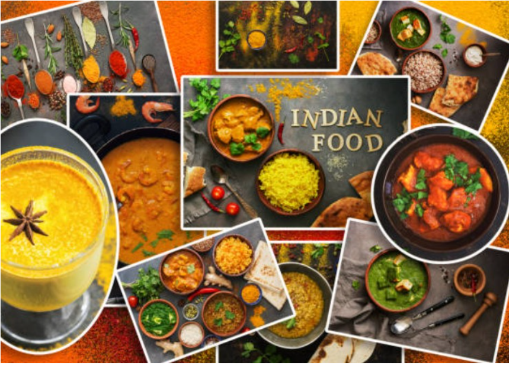

INDIAN CLOTHING
Indian clothing is diverse, reflecting the country's distinct regional cultures, historical traditions, and climate, with popular garments including the saree for women and the kurta and dhoti for men.

Kindly open this webpage on a Laptop for a better visul experience
Indian culture is defined by its deep-rooted principle of unity in diversity where a variety of religions, languages, and traditions coexist harmoniously. Central to this heritage is the strong emphasis on family values and respect for elders, alongside a tradition of hospitality encapsulated by the phrase Atithi Devo Bhava, meaning "the guest is God.
Indian food is a diverse and complex cuisine renowned for its aromatic spices like turmeric and cumin, and a wide range of regional dishes, from vegetarian lentil dals and creamy curries to street snacks like samosas.
Indian clothing is diverse, reflecting the country's distinct regional cultures, historical traditions, and climate, with popular garments including the saree for women and the kurta and dhoti for men.
Indian festivals are vibrant celebrations of culture, religion, and harvest, characterized by colorful decorations, delicious food, community gatherings, and music and dance. They include national holidays like Republic Day and religious events such as Diwali (Hindu), Eid (Muslim), and Christmas (Christian), fostering unity and bringing people together regardless of their background.
India's monuments, such as the Taj Mahal, Qutub Minar, and the Ajanta and Ellora Caves, are world-renowned for their rich history, diverse architectural styles (Mughal, Indo-Islamic, Dravidian), and cultural significance